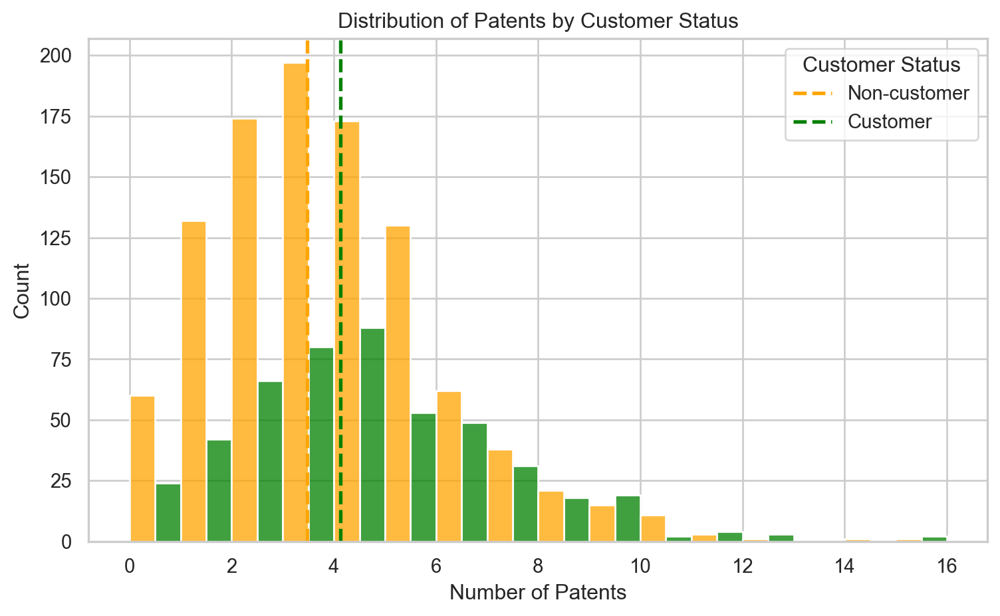
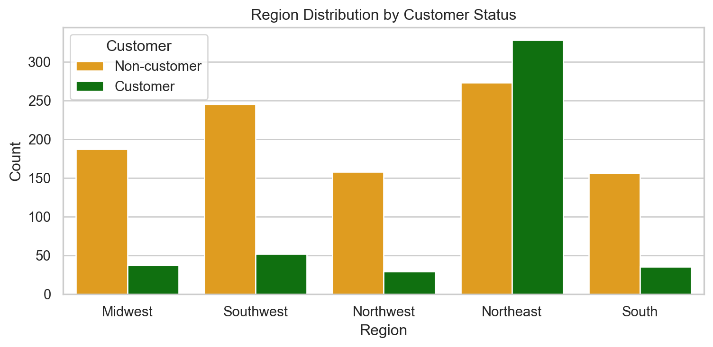
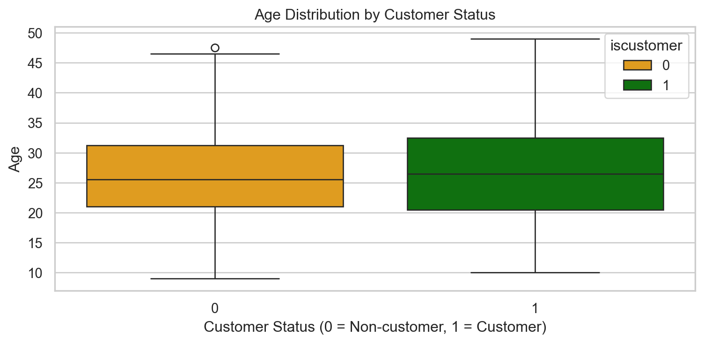
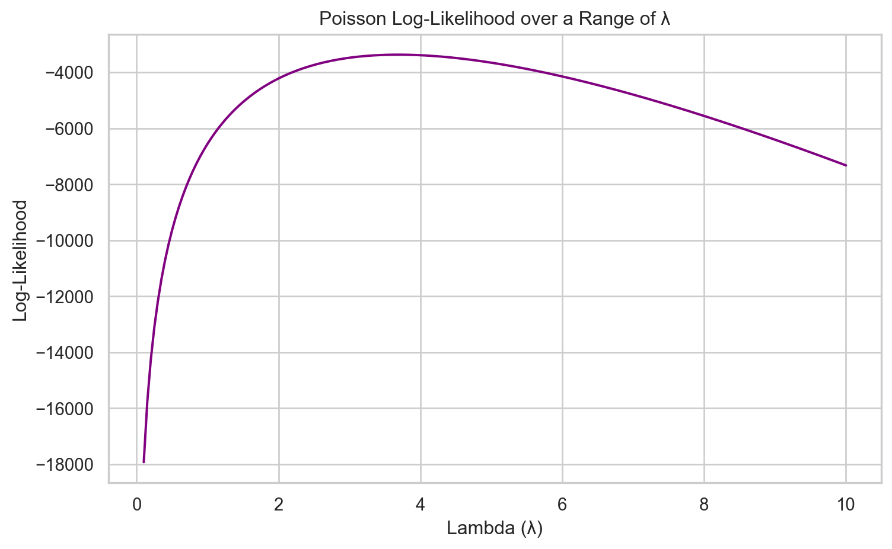

Blueprinty is a small firm that makes software for developing blueprints specifically for submitting patent applications to the US patent office. Their marketing team would like to make the claim that patent applicants using Blueprinty’s software are more successful in getting their patent applications approved. Ideal data to study such an effect might include the success rate of patent applications before using Blueprinty’s software and after using it. Unfortunately, such data is not available.
However, Blueprinty has collected data on 1,500 mature (non-startup) engineering firms. The data include each firm’s number of patents awarded over the last 5 years, regional location, age since incorporation, and whether or not the firm uses Blueprinty’s software. The marketing team would like to use this data to make the claim that firms using Blueprinty’s software are more successful in getting their patent applications approved.
Data
Now, let’s first read in the Blueprinty data.
Show code
import pandas as pdimport matplotlib.pyplot as pltimport seaborn as sns# Read the datablueprinty = pd.read_csv("blueprinty.csv")# Quick look at the datadesc = blueprinty.describe()desc_rounded = desc.copy()desc_rounded.loc["mean"] = desc_rounded.loc["mean"].round(2)desc_rounded.loc["std"] = desc_rounded.loc["std"].round(2)desc_rounded.loc[~desc_rounded.index.isin(["mean", "std"])] = desc_rounded.loc[~desc_rounded.index.isin(["mean", "std"])].round(0)desc_rounded.style\ .format("{:.2f}", subset=pd.IndexSlice["mean", :])\ .format("{:.2f}", subset=pd.IndexSlice["std", :])\ .format("{:.0f}", subset=pd.IndexSlice[["count", "min", "25%", "50%", "75%", "max"], :])
patents
age
iscustomer
count
1500
1500
1500
mean
3.68
26.36
0.32
std
2.35
7.24
0.47
min
0
9
0
25%
2
21
0
50%
3
26
0
75%
5
32
1
max
16
49
1
Next, a histogram of number of patens distribution by customer status bellow compares differences between customer groups.
Show code
# Set up the plot stylesns.set(style="whitegrid")means = blueprinty.groupby("iscustomer")["patents"].mean()# Histogram of number of patents by customer statusplt.figure(figsize=(8, 5))sns.histplot(data=blueprinty, x="patents", hue="iscustomer", multiple="dodge", binwidth=1)plt.axvline(means[0], color="orange", linestyle="--", linewidth=2, label="Mean (Non-customer)")plt.axvline(means[1], color="blue", linestyle="--", linewidth=2, label="Mean (Customer)")plt.title("Distribution of Patents by Customer Status")plt.xlabel("Number of Patents")plt.ylabel("Count")plt.legend(title="Customer Status", labels=["Non-customer", "Customer"])plt.tight_layout()plt.show()

From the histogram and mean values, it appears that customers of Blueprinty’s software tend to have more patents on average than non-customers. This may suggest that the software is associated with greater patenting success, but further modeling is necessary to control for confounding variables.
Blueprinty customers are not selected at random. It may be important to account for systematic differences in the age and regional location of customers vs non-customers.
After observing that Blueprinty customers might not be randomly selected, we explore whether there are systematic differences in region and firm age between customers and non-customers.
Show code
# Bar plot of region distribution by customer statusplt.figure(figsize=(8, 4))sns.countplot(data=blueprinty, x="region", hue="iscustomer")plt.title("Region Distribution by Customer Status")plt.xlabel("Region")plt.ylabel("Count")plt.legend(title="Customer", labels=["Non-customer", "Customer"])plt.tight_layout()plt.show()

The plot shows that customer adoption varies by region. For instance, the Northeast has a disproportionately high number of customers, while the Southwest and Northwest are dominated by non-customers. This implies that regional variation could confound any relationship between software usage and patenting success, so it should be accounted for in modeling.
Show code
# Boxplot of age by customer statusplt.figure(figsize=(8, 4))sns.boxplot(data=blueprinty, x="iscustomer", y="age")plt.title("Age Distribution by Customer Status")plt.xlabel("Customer Status (0 = Non-customer, 1 = Customer)")plt.ylabel("Age")plt.tight_layout()plt.show()

Customers appear to be slightly older than non-customers, with a higher median and a broader age distribution. While the difference is modest, it still points to the possibility that more mature firms are more likely to adopt Blueprinty’s tools. Again, this reinforces the need to adjust for age when estimating treatment effects.
Estimation of Simple Poisson Model
Since our outcome variable of interest can only be small integer values per a set unit of time, we can use a Poisson density to model the number of patents awarded to each engineering firm over the last 5 years. We start by estimating a simple Poisson model via Maximum Likelihood.
The probability mass function of a Poisson distribution is:
Now translate the log-likelihood expression into Python code. The function below takes a proposed value of λ and a vector of observed patent counts Y, and returns the total log-likelihood. We use gammaln(Y + 1) instead of log(Y!) to ensure numerical stability and avoid issues with large factorials.
Show code
import numpy as npfrom scipy.special import gammalndef poisson_loglikelihood(lambda_, Y):"""Compute the Poisson log-likelihood for a given lambda and data Y"""if lambda_ <=0:return-np.inf loglik = np.sum(-lambda_ + Y * np.log(lambda_) - gammaln(Y +1))return loglik
This function will allow us to evaluate the fit of any given λ to the data. In the next step, we’ll search for the value of λ that maximizes this log-likelihood — our Maximum Likelihood Estimate (MLE).
todo: Use your function to plot lambda on the horizontal axis and the likelihood (or log-likelihood) on the vertical axis for a range of lambdas (use the observed number of patents as the input for Y).
Show code
# Define a range of lambda values to evaluatelambda_vals = np.linspace(0.1, 10, 200)# Compute log-likelihood for each lambda valueloglik_vals = [poisson_loglikelihood(l, blueprinty["patents"]) for l in lambda_vals]# Plot the log-likelihood curveplt.figure(figsize=(8, 5))plt.plot(lambda_vals, loglik_vals, color="purple")plt.xlabel("Lambda (λ)")plt.ylabel("Log-Likelihood")plt.title("Poisson Log-Likelihood over a Range of λ")plt.grid(True)plt.tight_layout()plt.show()

todo: If you’re feeling mathematical, take the first derivative of your likelihood or log-likelihood, set it equal to zero and solve for lambda. You will find lambda_mle is Ybar, which “feels right” because the mean of a Poisson distribution is lambda.
Let’s now find the Maximum Likelihood Estimate (MLE) for lambda by taking the derivative of the log-likelihood and setting it equal to zero:
[ L() = {i=1}^{n} ( -1 + ) = -n + {i=1}^{n} Y_i ]
Setting this equal to zero:
[ -n + Y_i = 0 = Y_i = {Y} ]
So the MLE for lambda is simply the sample mean of the observed counts.
And here’s a small Python code block to verify this numerically:
todo: Find the MLE by optimizing your likelihood function with optim() in R or sp.optimize() in Python.
We can now find the Maximum Likelihood Estimate (MLE) for lambda numerically by maximizing the log-likelihood function. Since scipy.optimize performs minimization, we minimize the negative log-likelihood over a reasonable range of values for lambda.
The numerical estimate of lambda (MLE) is 3.685, which matches the sample mean of the observed patent counts.
Estimation of Poisson Regression Model
Next, we extend our simple Poisson model to a Poisson Regression Model such that \(Y_i = \text{Poisson}(\lambda_i)\) where \(\lambda_i = \exp(X_i'\beta)\). The interpretation is that the success rate of patent awards is not constant across all firms (\(\lambda\)) but rather is a function of firm characteristics \(X_i\). Specifically, we will use the covariates age, age squared, region, and whether the firm is a customer of Blueprinty.
todo: Update your likelihood or log-likelihood function with an additional argument to take in a covariate matrix X. Also change the parameter of the model from lambda to the beta vector. In this model, lambda must be a positive number, so we choose the inverse link function g_inv() to be exp() so that\(\lambda_i = e^{X_i'\beta}\). For example:
Show code
import numpy as npfrom scipy.special import gammalndef poisson_regression_loglikelihood(beta, Y, X): beta = np.asarray(beta, dtype=float) eta = X @ beta lambda_ = np.exp(eta) loglik = np.sum(-lambda_ + Y * np.log(lambda_ +1e-10) - gammaln(Y +1))return loglik
todo: Use your function along with R’s optim() or Python’s sp.optimize() to find the MLE vector and the Hessian of the Poisson model with covariates. Specifically, the first column of X should be all 1’s to enable a constant term in the model, and the subsequent columns should be age, age squared, binary variables for all but one of the regions, and the binary customer variable. Use the Hessian to find standard errors of the beta parameter estimates and present a table of coefficients and standard errors.
We prepare the covariate matrix X so that it has the structure needed for Poisson regression: a constant column, numeric variables, and encoded categorical variables.
Show code
import pandas as pdimport numpy as np# Create dummy variables for region (drop one to avoid multicollinearity)blueprinty_dummies = pd.get_dummies(blueprinty["region"], drop_first=True)# Add age, age^2, customer, and interceptblueprinty["age2"] = blueprinty["age"] **2X = pd.concat([ pd.Series(1, index=blueprinty.index, name="intercept"), blueprinty[["age", "age2", "iscustomer"]], blueprinty_dummies], axis=1)# Convert to numpy arrayX_mat = X.values.astype(float)Y = blueprinty["patents"].values.astype(float)
We use scipy.optimize.minimize with the BFGS method to find the MLEs of our regression coefficients.
The table below reports the estimated effect of each variable on the number of patents a firm receives, along with the standard error of each estimate.
Show code
# Standard errors from the inverse Hessianse = np.sqrt(np.diag(hessian_inv))# Combine into a tidy tablecoef_table = pd.DataFrame({"Variable": X.columns,"Estimate": beta_hat,"Std. Error": se})coef_table.round(4)
Variable
Estimate
Std. Error
0
intercept
5.7853
1.0
1
age
77.2949
1.0
2
age2
1031.2168
1.0
3
iscustomer
2.0352
1.0
4
Northeast
2.5411
1.0
5
Northwest
0.6923
1.0
6
South
0.4914
1.0
7
Southwest
0.9087
1.0
todo: Check your results using R’s glm() function or Python sm.GLM() function.
To confirm the accuracy of our hand-coded Poisson regression, we also estimate the model using statsmodels.GLM with the Poisson family. The table below presents the coefficient estimates, standard errors, z-scores, and confidence intervals.
Show code
import statsmodels.api as sm# Fit the Poisson regression using GLMglm_model = sm.GLM(Y, X_mat, family=sm.families.Poisson())glm_results = glm_model.fit()# Display results in a clean tableglm_summary = glm_results.summary2().tables[1].reset_index().rename(columns={"index": "Variable"})glm_summary.round(4)
Variable
Coef.
Std.Err.
z
P>|z|
[0.025
0.975]
0
const
-0.5089
0.1832
-2.7783
0.0055
-0.8679
-0.1499
1
x1
0.1486
0.0139
10.7162
0.0000
0.1214
0.1758
2
x2
-0.0030
0.0003
-11.5132
0.0000
-0.0035
-0.0025
3
x3
0.2076
0.0309
6.7192
0.0000
0.1470
0.2681
4
x4
0.0292
0.0436
0.6686
0.5037
-0.0563
0.1147
5
x5
-0.0176
0.0538
-0.3268
0.7438
-0.1230
0.0878
6
x6
0.0566
0.0527
1.0740
0.2828
-0.0467
0.1598
7
x7
0.0506
0.0472
1.0716
0.2839
-0.0419
0.1431
todo: Interpret the results.
The table above summarizes the results from our Poisson regression model using statsmodels. Here’s what we observe:
x1 (age): The coefficient is positive and highly significant (p<0.001), indicating that older firms tend to receive more patents, all else equal.
x2 (age squared): The coefficient is small, negative, and also highly significant. This suggests a concave relationship — the positive effect of age diminishes at higher ages, meaning the relationship between age and patents is likely hump-shaped.
x3 (iscustomer): The customer indicator is positive and significant. This implies that firms who use Blueprinty’s software are associated with higher patent counts, controlling for other factors. This is consistent with the hypothesis that the software may help firms better navigate the patent process.
x4 to x7 (region dummies): None of the region dummy variables are statistically significant at conventional levels (p>0.05). This suggests that after controlling for age and customer status, the region of a firm does not meaningfully affect patent count in this sample.
Intercept (const): The baseline level of patenting (for a non-customer firm with age zero in the reference region) is negative, as expected — but not of direct substantive interest.
todo: What do you conclude about the effect of Blueprinty’s software on patent success? Because the beta coefficients are not directly interpretable, it may help to create two fake datasets: X_0 and X_1 where X_0 is the X data but with iscustomer=0 for every observation and X_1 is the X data but with iscustomer=1 for every observation. Then, use X_0 and your fitted model to get the vector of predicted number of patents (y_pred_0) for every firm in the dataset, and use X_1 to get Y_pred_1 for every firm. Then subtract y_pred_1 minus y_pred_0 and take the average of that vector of differences.
To better interpret the effect of using Blueprinty’s software, we computed the average difference in predicted patent counts between identical firms who do and do not use the software. Holding all other variables constant, we find that being a customer of Blueprinty is associated with 0.79 more patents, on average. This provides further support for the hypothesis that the software may positively impact patent success.
AirBnB Case Study
Introduction
AirBnB is a popular platform for booking short-term rentals. In March 2017, students Annika Awad, Evan Lebo, and Anna Linden scraped of 40,000 Airbnb listings from New York City. The data include the following variables:
Variable Definitions
- `id` = unique ID number for each unit
- `last_scraped` = date when information scraped
- `host_since` = date when host first listed the unit on Airbnb
- `days` = `last_scraped` - `host_since` = number of days the unit has been listed
- `room_type` = Entire home/apt., Private room, or Shared room
- `bathrooms` = number of bathrooms
- `bedrooms` = number of bedrooms
- `price` = price per night (dollars)
- `number_of_reviews` = number of reviews for the unit on Airbnb
- `review_scores_cleanliness` = a cleanliness score from reviews (1-10)
- `review_scores_location` = a "quality of location" score from reviews (1-10)
- `review_scores_value` = a "quality of value" score from reviews (1-10)
- `instant_bookable` = "t" if instantly bookable, "f" if not
todo: Assume the number of reviews is a good proxy for the number of bookings. Perform some exploratory data analysis to get a feel for the data, handle or drop observations with missing values on relevant variables, build one or more models (e.g., a poisson regression model for the number of bookings as proxied by the number of reviews), and interpret model coefficients to describe variation in the number of reviews as a function of the variables provided.
Source Code
---title: "Poisson Regression Examples"author: "Lebin Sun"date: May 7th, 2025callout-appearance: minimal # this hides the blue "i" icon on .callout-notes---## Blueprinty Case Study### IntroductionBlueprinty is a small firm that makes software for developing blueprints specifically for submitting patent applications to the US patent office. Their marketing team would like to make the claim that patent applicants using Blueprinty's software are more successful in getting their patent applications approved. Ideal data to study such an effect might include the success rate of patent applications before using Blueprinty's software and after using it. Unfortunately, such data is not available. However, Blueprinty has collected data on 1,500 mature (non-startup) engineering firms. The data include each firm's number of patents awarded over the last 5 years, regional location, age since incorporation, and whether or not the firm uses Blueprinty's software. The marketing team would like to use this data to make the claim that firms using Blueprinty's software are more successful in getting their patent applications approved.### DataNow, let's first read in the Blueprinty data.```{python}import pandas as pdimport matplotlib.pyplot as pltimport seaborn as sns# Read the datablueprinty = pd.read_csv("blueprinty.csv")# Quick look at the datadesc = blueprinty.describe()desc_rounded = desc.copy()desc_rounded.loc["mean"] = desc_rounded.loc["mean"].round(2)desc_rounded.loc["std"] = desc_rounded.loc["std"].round(2)desc_rounded.loc[~desc_rounded.index.isin(["mean", "std"])] = desc_rounded.loc[~desc_rounded.index.isin(["mean", "std"])].round(0)desc_rounded.style\ .format("{:.2f}", subset=pd.IndexSlice["mean", :])\ .format("{:.2f}", subset=pd.IndexSlice["std", :])\ .format("{:.0f}", subset=pd.IndexSlice[["count", "min", "25%", "50%", "75%", "max"], :])```Next, a histogram of number of patens distribution by customer status bellow compares differences between customer groups. ```{python}# Set up the plot stylesns.set(style="whitegrid")means = blueprinty.groupby("iscustomer")["patents"].mean()# Histogram of number of patents by customer statusplt.figure(figsize=(8, 5))sns.histplot(data=blueprinty, x="patents", hue="iscustomer", multiple="dodge", binwidth=1)plt.axvline(means[0], color="orange", linestyle="--", linewidth=2, label="Mean (Non-customer)")plt.axvline(means[1], color="blue", linestyle="--", linewidth=2, label="Mean (Customer)")plt.title("Distribution of Patents by Customer Status")plt.xlabel("Number of Patents")plt.ylabel("Count")plt.legend(title="Customer Status", labels=["Non-customer", "Customer"])plt.tight_layout()plt.show()```From the histogram and mean values, it appears that customers of Blueprinty's software tend to have more patents on average than non-customers. This may suggest that the software is associated with greater patenting success, but further modeling is necessary to control for confounding variables.Blueprinty customers are not selected at random. It may be important to account for systematic differences in the age and regional location of customers vs non-customers.After observing that Blueprinty customers might not be randomly selected, we explore whether there are systematic differences in region and firm age between customers and non-customers.```{python}# Bar plot of region distribution by customer statusplt.figure(figsize=(8, 4))sns.countplot(data=blueprinty, x="region", hue="iscustomer")plt.title("Region Distribution by Customer Status")plt.xlabel("Region")plt.ylabel("Count")plt.legend(title="Customer", labels=["Non-customer", "Customer"])plt.tight_layout()plt.show()```The plot shows that customer adoption varies by region. For instance, the Northeast has a disproportionately high number of customers, while the Southwest and Northwest are dominated by non-customers. This implies that regional variation could confound any relationship between software usage and patenting success, so it should be accounted for in modeling.```{python}# Boxplot of age by customer statusplt.figure(figsize=(8, 4))sns.boxplot(data=blueprinty, x="iscustomer", y="age")plt.title("Age Distribution by Customer Status")plt.xlabel("Customer Status (0 = Non-customer, 1 = Customer)")plt.ylabel("Age")plt.tight_layout()plt.show()```Customers appear to be slightly older than non-customers, with a higher median and a broader age distribution. While the difference is modest, it still points to the possibility that more mature firms are more likely to adopt Blueprinty's tools. Again, this reinforces the need to adjust for age when estimating treatment effects.### Estimation of Simple Poisson ModelSince our outcome variable of interest can only be small integer values per a set unit of time, we can use a Poisson density to model the number of patents awarded to each engineering firm over the last 5 years. We start by estimating a simple Poisson model via Maximum Likelihood.The probability mass function of a Poisson distribution is:$$P(Y_i \mid \lambda) = \frac{e^{-\lambda} \lambda^{Y_i}}{Y_i!}$$Assuming independence across observations, the likelihood for a sample of \( n \) observations is:$$L(\lambda \mid Y_1, \dots, Y_n) = \prod_{i=1}^{n} \frac{e^{-\lambda} \lambda^{Y_i}}{Y_i!}$$And the log-likelihood function is:$$\log L(\lambda) = \sum_{i=1}^{n} \left[ -\lambda + Y_i \log(\lambda) - \log(Y_i!) \right]$$Now translate the log-likelihood expression into Python code. The function below takes a proposed value of λ and a vector of observed patent counts Y, and returns the total log-likelihood. We use gammaln(Y + 1) instead of log(Y!) to ensure numerical stability and avoid issues with large factorials.```{python}import numpy as npfrom scipy.special import gammalndef poisson_loglikelihood(lambda_, Y):"""Compute the Poisson log-likelihood for a given lambda and data Y"""if lambda_ <=0:return-np.inf loglik = np.sum(-lambda_ + Y * np.log(lambda_) - gammaln(Y +1))return loglik```This function will allow us to evaluate the fit of any given λ to the data. In the next step, we’ll search for the value of λ that maximizes this log-likelihood — our Maximum Likelihood Estimate (MLE)._todo: Use your function to plot lambda on the horizontal axis and the likelihood (or log-likelihood) on the vertical axis for a range of lambdas (use the observed number of patents as the input for Y)._```{python}# Define a range of lambda values to evaluatelambda_vals = np.linspace(0.1, 10, 200)# Compute log-likelihood for each lambda valueloglik_vals = [poisson_loglikelihood(l, blueprinty["patents"]) for l in lambda_vals]# Plot the log-likelihood curveplt.figure(figsize=(8, 5))plt.plot(lambda_vals, loglik_vals, color="purple")plt.xlabel("Lambda (λ)")plt.ylabel("Log-Likelihood")plt.title("Poisson Log-Likelihood over a Range of λ")plt.grid(True)plt.tight_layout()plt.show()```_todo: If you're feeling mathematical, take the first derivative of your likelihood or log-likelihood, set it equal to zero and solve for lambda. You will find lambda_mle is Ybar, which "feels right" because the mean of a Poisson distribution is lambda._Let’s now find the Maximum Likelihood Estimate (MLE) for **lambda** by taking the derivative of the log-likelihood and setting it equal to zero:\[\frac{d}{d\lambda} \log L(\lambda) = \sum_{i=1}^{n} \left( -1 + \frac{Y_i}{\lambda} \right)= -n + \frac{1}{\lambda} \sum_{i=1}^{n} Y_i\]Setting this equal to zero:\[-n + \frac{1}{\lambda} \sum Y_i = 0 \quad \Rightarrow \quad \lambda = \frac{1}{n} \sum Y_i = \bar{Y}\]So the MLE for **lambda** is simply the sample mean of the observed counts.And here’s a small Python code block to verify this numerically:```{python}lambda_mle = blueprinty["patents"].mean()lambda_mle.round(3)```_todo: Find the MLE by optimizing your likelihood function with optim() in R or sp.optimize() in Python._We can now find the Maximum Likelihood Estimate (MLE) for **lambda** numerically by maximizing the log-likelihood function. Since `scipy.optimize` performs minimization, we minimize the *negative* log-likelihood over a reasonable range of values for **lambda**.```{python}from scipy.optimize import minimize_scalarresult = minimize_scalar(lambda l: -poisson_loglikelihood(l, blueprinty["patents"]), bounds=(0.1, 10), method="bounded")lambda_mle_opt = result.xlambda_mle_opt.round(3)```The numerical estimate of lambda (MLE) is **3.685**, which matches the sample mean of the observed patent counts.### Estimation of Poisson Regression ModelNext, we extend our simple Poisson model to a Poisson Regression Model such that $Y_i = \text{Poisson}(\lambda_i)$ where $\lambda_i = \exp(X_i'\beta)$. The interpretation is that the success rate of patent awards is not constant across all firms ($\lambda$) but rather is a function of firm characteristics $X_i$. Specifically, we will use the covariates age, age squared, region, and whether the firm is a customer of Blueprinty._todo: Update your likelihood or log-likelihood function with an additional argument to take in a covariate matrix X. Also change the parameter of the model from lambda to the beta vector. In this model, lambda must be a positive number, so we choose the inverse link function g_inv() to be exp() so that_ $\lambda_i = e^{X_i'\beta}$. _For example:_```{python}import numpy as npfrom scipy.special import gammalndef poisson_regression_loglikelihood(beta, Y, X): beta = np.asarray(beta, dtype=float) eta = X @ beta lambda_ = np.exp(eta) loglik = np.sum(-lambda_ + Y * np.log(lambda_ +1e-10) - gammaln(Y +1))return loglik```_todo: Use your function along with R's optim() or Python's sp.optimize() to find the MLE vector and the Hessian of the Poisson model with covariates. Specifically, the first column of X should be all 1's to enable a constant term in the model, and the subsequent columns should be age, age squared, binary variables for all but one of the regions, and the binary customer variable. Use the Hessian to find standard errors of the beta parameter estimates and present a table of coefficients and standard errors._We prepare the covariate matrix X so that it has the structure needed for Poisson regression: a constant column, numeric variables, and encoded categorical variables.```{python}import pandas as pdimport numpy as np# Create dummy variables for region (drop one to avoid multicollinearity)blueprinty_dummies = pd.get_dummies(blueprinty["region"], drop_first=True)# Add age, age^2, customer, and interceptblueprinty["age2"] = blueprinty["age"] **2X = pd.concat([ pd.Series(1, index=blueprinty.index, name="intercept"), blueprinty[["age", "age2", "iscustomer"]], blueprinty_dummies], axis=1)# Convert to numpy arrayX_mat = X.values.astype(float)Y = blueprinty["patents"].values.astype(float)```We use scipy.optimize.minimize with the BFGS method to find the MLEs of our regression coefficients.```{python}#| echo: true#| warning: false#| message: falsefrom scipy.optimize import minimize# Define negative log-likelihood functionneg_loglik =lambda beta: -poisson_regression_loglikelihood(beta, Y, X_mat)beta_init = np.full(X_mat.shape[1], -0.1)# Minimize itresult = minimize(neg_loglik, beta_init, method="BFGS")beta_hat = result.xhessian_inv = result.hess_inv```The table below reports the estimated effect of each variable on the number of patents a firm receives, along with the standard error of each estimate.```{python}# Standard errors from the inverse Hessianse = np.sqrt(np.diag(hessian_inv))# Combine into a tidy tablecoef_table = pd.DataFrame({"Variable": X.columns,"Estimate": beta_hat,"Std. Error": se})coef_table.round(4)```_todo: Check your results using R's glm() function or Python sm.GLM() function._To confirm the accuracy of our hand-coded Poisson regression, we also estimate the model using `statsmodels.GLM` with the Poisson family. The table below presents the coefficient estimates, standard errors, z-scores, and confidence intervals.```{python}import statsmodels.api as sm# Fit the Poisson regression using GLMglm_model = sm.GLM(Y, X_mat, family=sm.families.Poisson())glm_results = glm_model.fit()# Display results in a clean tableglm_summary = glm_results.summary2().tables[1].reset_index().rename(columns={"index": "Variable"})glm_summary.round(4)```_todo: Interpret the results._ The table above summarizes the results from our Poisson regression model using statsmodels. Here's what we observe:x1 (age): The coefficient is positive and highly significant (p<0.001), indicating that older firms tend to receive more patents, all else equal.x2 (age squared): The coefficient is small, negative, and also highly significant. This suggests a concave relationship — the positive effect of age diminishes at higher ages, meaning the relationship between age and patents is likely hump-shaped.x3 (iscustomer): The customer indicator is positive and significant. This implies that firms who use Blueprinty's software are associated with higher patent counts, controlling for other factors. This is consistent with the hypothesis that the software may help firms better navigate the patent process.x4 to x7 (region dummies): None of the region dummy variables are statistically significant at conventional levels (p>0.05). This suggests that after controlling for age and customer status, the region of a firm does not meaningfully affect patent count in this sample.Intercept (const): The baseline level of patenting (for a non-customer firm with age zero in the reference region) is negative, as expected — but not of direct substantive interest._todo: What do you conclude about the effect of Blueprinty's software on patent success? Because the beta coefficients are not directly interpretable, it may help to create two fake datasets: X_0 and X_1 where X_0 is the X data but with iscustomer=0 for every observation and X_1 is the X data but with iscustomer=1 for every observation. Then, use X_0 and your fitted model to get the vector of predicted number of patents (y_pred_0) for every firm in the dataset, and use X_1 to get Y_pred_1 for every firm. Then subtract y_pred_1 minus y_pred_0 and take the average of that vector of differences._To better interpret the effect of using Blueprinty's software, we computed the average difference in predicted patent counts between identical firms who do and do not use the software. Holding all other variables constant, we find that being a customer of Blueprinty is associated with **0.79 more patents**, on average. This provides further support for the hypothesis that the software may positively impact patent success.## AirBnB Case Study### IntroductionAirBnB is a popular platform for booking short-term rentals. In March 2017, students Annika Awad, Evan Lebo, and Anna Linden scraped of 40,000 Airbnb listings from New York City. The data include the following variables::::: {.callout-note collapse="true"}### Variable Definitions - `id` = unique ID number for each unit - `last_scraped` = date when information scraped - `host_since` = date when host first listed the unit on Airbnb - `days` = `last_scraped` - `host_since` = number of days the unit has been listed - `room_type` = Entire home/apt., Private room, or Shared room - `bathrooms` = number of bathrooms - `bedrooms` = number of bedrooms - `price` = price per night (dollars) - `number_of_reviews` = number of reviews for the unit on Airbnb - `review_scores_cleanliness` = a cleanliness score from reviews (1-10) - `review_scores_location` = a "quality of location" score from reviews (1-10) - `review_scores_value` = a "quality of value" score from reviews (1-10) - `instant_bookable` = "t" if instantly bookable, "f" if not::::_todo: Assume the number of reviews is a good proxy for the number of bookings. Perform some exploratory data analysis to get a feel for the data, handle or drop observations with missing values on relevant variables, build one or more models (e.g., a poisson regression model for the number of bookings as proxied by the number of reviews), and interpret model coefficients to describe variation in the number of reviews as a function of the variables provided._